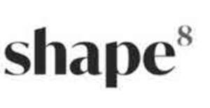

Trade Mark Journal No.2025/051 19 December 2025
UK00004298926 21 November 2025 (3,5,9,10,25,29,32,35,41,42,44)
Mark 1
shape8
Mark 2

- Class 3
- Non-medicated cosmetics and toiletry preparations; dentifrices; skincare preparations; cosmeceutical preparations; nutricosmetics and cosmeceuticals for cosmetic use; cosmetics; non-medicated cosmeceutical skin creams; personal care products; beauty care preparations; moisturisers, creams, lotions, serums, gels, toners, cleansers and peels; skin hydrators being injectable dermal fillers; lip care products; lip balms, scrubs, salves, gloss and oils; creams for use on lips; skin care products; skin preparations; creams for firming the skin; oils for use on skin; skin care oils [cosmetic]; anti-ageing creams; anti-ageing serum; beauty serums with anti-ageing properties; anti-wrinkle creams; spf creams, gels and moisturisers; make up; perfumery; essential oils; NAD+ based skin rejuvenation creams; nicotinamide adenine dinucleotide (NAD+) serums for skin care; cosmetic preparations for the care of the skin containing NAD+ or NAD+ precursors; topical preparations for reducing the appearance of wrinkles containing and; cosmetic preparations for improving skin texture containing nicotinamide riboside (nr); cosmetic preparations for skin regeneration containing nicotinamide mononucleotide (nmn); cellular regeneration creams and lotions containing NAD+ or NAD+ derivatives; skin care preparations with anti-aging properties containing NAD+ precursors; cosmetic products for skin hydration containing NAD+ or NAD+ precursors.
- Class 5
- Pharmaceuticals; medical preparations; pharmaceutical preparations for weight loss and weight control; medical preparations for weight loss and weight control; prescription medications for weight loss and weight control; dietetic food and substances for clinical nutrition; dietetic substances for medical use; dietetic food and substances for weight loss purposes; meal replacement products for weight loss and weight control; protein powder dietary supplements; dietary drinks; mineral water salts; mineral food supplements; dietary supplement drink mixes; nutritional supplement drinks; nutritional supplements; food bars, soups, shakes, drinks and drinks in powdered form; dietary meal replacement bars; dietetic foods; weight loss food supplements; nutritional supplements and dietetic preparations for weight loss and weight control; vitamins; vitamin drink; slimming teas for medicinal use; herbal teas intended to support weight loss; injectable dermal filler; skin boosters; intramuscular vitamin injections; medical grade skincare; dermal filler; botulinum toxin; medicated preparations for skin treatments; medicated skin care preparations and medicated cosmeceuticals; dermatological preparations; skin calming serum [medicated]; medicinal creams for the protection of the skin; medicated nutricosmetic preparations; food and health supplements for the treatment and improvement of skin, hair and nails; nutritional supplements for the treatment and improvement of skin, hair and nails; hormone-balancing supplements for skin and hair health; bioactive peptides for anti-aging therapies; NAD+ (nicotinamide adenine dinucleotide); supplements for longevity; vitamins and mineral supplements for human use amino acid supplements for human use; herbal dietary supplements for human consumption; probiotic dietary supplements for human consumption; fatty acid dietary supplements for human consumption; enzyme supplements for human use; bioactive compound supplements for human use; dietary supplements for improving cellular health; food supplements for improving metabolism containing NAD+ precursors; supplements containing nicotinamide adenine dinucleotide (NAD+) for cellular health; supplements containing nicotinamide riboside (nr) for improving cellular health; supplements containing nicotinamide mononucleotide (nmn) for enhancing metabolism; transdermal patches; transdermal patches for delivering NAD+ or NAD+ precursors; cereal-based meal replacement bars; dietary supplement drinks; meal-replacement powders for shakes.
- Class 9
- Electronic health, fitness and weight loss tracking books; electronic health, fitness and weight loss plans; downloadable resources in the field of health and fitness, nutrition, weight loss, wellness, aesthetics, pharmaceuticals, cosmeceuticals, medications, beauty and cosmetics; electronic printed matter, diaries, tracking books and plans in the field of health and fitness, nutrition, weight loss, wellness, aesthetics, pharmaceuticals, cosmeceuticals, medications, beauty and cosmetics; downloadable software in the field of health and fitness, nutrition, weight loss, wellness, aesthetics, pharmaceuticals, cosmeceuticals, medications, beauty and cosmetics; downloadable computer software in the field of health and fitness, nutrition, weight loss, wellness, aesthetics, pharmaceuticals, cosmeceuticals, medications, beauty and cosmetics; downloadable application software in the field of health and fitness, nutrition, weight loss, wellness, aesthetics, pharmaceuticals, cosmeceuticals, medications, beauty and cosmetics; downloadable software applications in the field of health and fitness, nutrition, weight loss, wellness, aesthetics, pharmaceuticals, cosmeceuticals, medications, beauty and cosmetics; software downloadable from the internet in the field of health and fitness, nutrition, weight loss, wellness, aesthetics, pharmaceuticals, cosmeceuticals, medications, beauty and cosmetics; smartphone software applications, downloadable in the field of health and fitness, nutrition, weight loss, wellness, aesthetics, pharmaceuticals, cosmeceuticals, medications, beauty and cosmetics; downloadable smart phone applications (software) in the field of health and fitness, nutrition, weight loss, wellness, aesthetics, pharmaceuticals, cosmeceuticals, medications, beauty and cosmetics; downloadable mobile application software, namely, mobile portals for providing health, nutrition and weight loss assessments; audio and visual recordings, podcasts in the fields of health tracking and monitoring, health supplements, weight loss, health and fitness, nutrition, aesthetics, pharmaceuticals, cosmeceuticals, medications, beauty and cosmetics.
- Class 10
- Medical apparatus and instruments; medical devices; NAD+ iv infusion therapy equipment; medical infusion pumps for NAD+ and vitamin drips; NAD+ injection kits, namely, syringes, ampoules, infusion sets; biofeedback and monitoring devices for longevity and NAD+ therapy; wearable health monitoring devices focused on energy metabolism; medical-grade iv stands and administration sets; infusion warmers; portable iv therapy kits for home or clinic use; medical devices for administering dietary supplements, including NAD+ or NAD+ precursors; medical apparatus for the delivery of nicotinamide adenine dinucleotide (NAD+) or its derivatives; medical devices for the delivery of supplements; NAD+ infusion apparatus for medical purposes; NAD+ or NAD+ precursor delivery systems for use in medical treatments; devices for the controlled release of bioactive compounds; therapeutic devices for the application of anti-aging treatments; medical instruments for administering nutritional or vitamin supplements; health monitoring devices for measuring the impact supplements on health; medical diagnostic devices for metabolic and cellular aging; medical instruments and apparatus for skin and body treatments; led light therapy masks for skin rejuvenation; microneedling pens and dermarollers; microneedling devices; high-frequency facial devices; electroporation beauty devices for NAD+ and vitamin absorption; rf (radiofrequency) and ultrasound skin tightening devices; cryotherapy facial devices; medical apparatus for injecting dermal filler; medical apparatus relating to botulinum toxin injections; micro-injectors for mesotherapy and skin rejuvenation; auto-injectors for anti-aging and regenerative treatments; cryolipolysis (fat-freezing) machines; radiofrequency body tightening devices; cavitation fat reduction machines; ems (electrical muscle stimulation) body toning devices; physical therapy equipment.
- Class 25
- Articles of clothing, footwear and headwear.
- Class 29
- Fruit-based meal replacement bars; nut-based meal replacement bars; protein supplement energy bars and food bars; foodstuffs for use in weight control and diet programmes, namely, low calorie and calorie counted meals and dishes, low calorie and calorie counted nutritionally balanced foods and edible preparations; dietary and nutritionally balanced meals and shakes, namely, low calorie and calorie counted meals and dishes, low calorie powdered shakes and soups; preserved, frozen, dried and cooked fruits and vegetables; jellies, jams, compotes; eggs; milk, yogurt and other milk products; prepared meals comprising meat, poultry, game, fish, seafood, vegetables, potatoes, dairy products or dairy substitutes, nuts, eggs, fruit or soya.
- Class 32
- Non-alcoholic beverages; mineral and aerated waters; fruit beverages and fruit juices; syrups and other preparations for making non-alcoholic beverages; drinks containing health supplements; beverages, not for medical purposes, to promote weight loss; powder, liquid and syrup concentrates for weight loss drinks and beverages.
- Class 35
- Retail, wholesale and online retail services in connection with health and fitness, nutritional products, weight loss, wellness, aesthetics, medicines and pharmaceutical products, supplements, food supplements, nutritional supplements for skin, hair and nails, weight loss foods and beverages, cosmetics, toiletries, skincare preparations, medical skincare preparations, cosmeceutical preparations; retail, wholesale and online retail services in connection with the sale of clothing, footwear, headwear; retail, wholesale and online retail services in connection with food and beverages, meal replacements, health foods and supplements, vitamins, minerals and medications.
- Class 41
- Non-downloadable resources such as videos, articles, blog posts, and recipes in the field of health and fitness, nutrition, diet, weight loss, fasting, health and wellness, aesthetics, pharmaceuticals, medications, beauty and cosmetics; educational and training services; health and wellness training; professional coaching services in the field of health, fitness, wellness management; providing professional group coaching services in the field of achieving behavioural changes to avoid or address pre-chronic and chronic conditions; conducting online and in-person training, classes, seminars, conferences, workshops, and self-paced online courses in the fields of health and fitness, nutrition, diet, weight loss, health and wellness, aesthetics, pharmaceuticals, medications, beauty and cosmetics and distribution of training materials in connection therewith; providing information, instruction and advice in the field of health and fitness, nutrition, diet, weight loss, health and wellness, aesthetics pharmaceuticals, medications, beauty and cosmetics.
- Class 42
- Software as a service [SaaS] relating to services for providing telemedicine services such as virtual medical and healthcare consultations and online prescribing of medications; software as a service [SaaS] featuring services for facilitating interaction between users and medical and health professionals including clinicians, dietitians and pharmacist; software as a service [SaaS] for sharing information in relation to health and fitness, nutrition, diet, weight loss, fasting, health and wellness, aesthetics, pharmaceuticals, medications, beauty and cosmetics; software as a service [SaaS] namely relating to services for setting, tracking, monitoring and sharing weight loss data and goals,for tracking exercise data, for tracking nutrition data; software as a service (SaaS) featuring software for accessing information related to weight loss, exercise, and nutrition; software as a service (SaaS) featuring software for providing medication compliance information, support, proctoring, and monitoring; providing online non-downloadable software for use in the healthcare field; providing access to online, non-downloadable, podcasts, blogs and text, video, audio and multimedia content; providing temporary use of online non-downloadable software to facilitate communication in the field of health, wellness, weight loss, medical issues and procedures for chronic and pre-chronic conditions; providing temporary use of online non-downloadable computer application software to facilitate support and sharing of information in the fields of health, wellness, weight loss, medical issues and procedures; providing temporary use of online non-downloadable computer application software to provide professional coaching services in the field of health, wellness, weight loss and medical issues.
- Class 44
- Weight management services; medical consultation in relation to weight loss/telehealth consultations; health assessment services; medical treatments services; provision of remote medical services, namely, assessing patient eligibility for medication and prescribing medication; medical treatment services in the field of weight loss; slimming treatment services; weight control treatment; weight management services; weight reduction services; providing medical advice and information in the fields of field of health and fitness, nutrition, diet, weight loss, fasting, health and wellness, aesthetics, pharmaceuticals, medications, beauty and cosmetics; nutrition counselling; providing weight loss program services; providing nutritional information about drinks for medical weight loss purposes; providing nutritional information about food for medical weight loss purposes; online medical consultations for weight loss medication, health, nutrition and wellness; medical and aesthetic treatment (non-surgical); aesthetic treatment services for cosmetic purposes, dermal filler treatment, botulinum toxin treatments; antiwrinkle treatment, skin care treatments, injectable treatments, fat dissolving treatments, cosmetic treatments, beauty treatment services (non-surgical); beauty therapy treatments; microneedling and mesotherapy services for skin rejuvenation; facial treatment services; facial beauty treatment services; clinic services in the field of weight loss treatment and weight management; clinic services in the medical, pharmaceutical, health, beauty, aesthetics and weight management fields; advisory services in the of health and fitness, nutrition, diet, weight loss, fasting, health and wellness, aesthetics, pharmaceuticals, medications, beauty and cosmetics; surgical diagnostic services; surgical services; NAD+ iv therapy clinics; NAD+ infusion therapy for energy, anti-aging, and cognitive function; NAD+ injection treatments for cellular repair and longevity; NAD+ transdermal patch therapy services; NAD+ inhalation therapy and nebulization services; supervision of personalised treatment programs based on metabolic health, namely, NAD+ treatment programs; mobile NAD+ therapy services (at-home or concierge services); medical aesthetic services (non-surgical anti-aging treatments).
Shape Your Wellness Limited
Representative: Mathys & Squire LLP